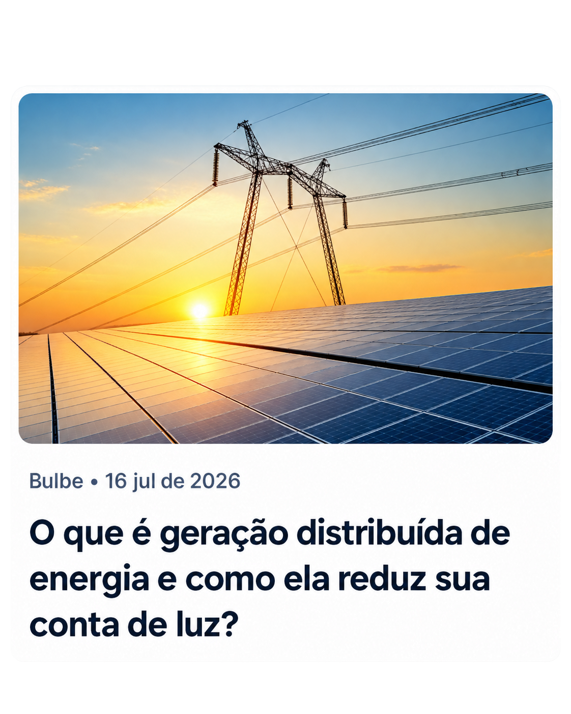

O que é geração distribuída de energia e como ela reduz sua conta de luz?
Bulbe

Geração distribuída é produzir energia elétrica no próprio local de uso, ou muito perto dele, em vez de depender só de grandes usinas distantes. Quem consome passa a poder gerar também.
A energia solar deu escala a esse modelo: painéis em telhados e fazendas solares enviam energia para a rede e rendem créditos, que viram desconto direto na fatura de luz.
O que é
Em vez de a energia sair de poucas usinas enormes, ela passa a ser produzida em muitos pontos pequenos: casas, comércios, indústrias e propriedades rurais.
O sol é a fonte mais comum, com painéis fotovoltaicos, mas o modelo também aceita pequenas usinas eólicas, biomassa e pequenas hidrelétricas.
Como funciona na prática
A energia gerada é consumida na hora pelo imóvel. O que sobra é enviado para a rede da distribuidora (em Minas Gerais, a Cemig) e fica registrado como crédito no nome do consumidor.
Nas faturas seguintes, esse crédito é descontado do consumo. Você usa a rede quando precisa, mas paga menos porque já colocou energia nela antes.
Fontes de energia
- Solar fotovoltaica: a mais usada no Brasil, silenciosa e sem combustível.
- Eólica: pequenos aerogeradores, indicados para locais com vento constante.
- Biomassa e biogás: transformam resíduos agrícolas e orgânicos em eletricidade.
- Pequenas hidrelétricas: aproveitam pequenos cursos d’água.
- Cogeração qualificada: reaproveita o calor de processos industriais.
Modalidades
- Junto à carga: a usina fica no mesmo lugar do consumo, como painéis no telhado.
- Autoconsumo remoto: a usina fica em um endereço e o consumo em outro, no nome do mesmo titular.
- Geração compartilhada: várias pessoas dividem os créditos de uma mesma usina. É a base da energia solar por assinatura.
- Condomínios: a energia é dividida entre as unidades do empreendimento.
Pelo tamanho, os sistemas se dividem em microgeração (até 75 kW, comum em casas e pequenos comércios) e minigeração (acima de 75 kW, usada por empresas e fazendas solares).
Compensação de créditos
A energia injetada na rede vira crédito em quilowatt-hora pelo Sistema de Compensação de Energia Elétrica. Na fatura, o consumo é abatido por esses créditos e você paga só a diferença, mais as taxas mínimas.
Créditos que sobram valem por até 60 meses e podem ser usados em outras unidades do mesmo titular ou do mesmo grupo de geração compartilhada.
Vantagens e cuidados
- Economia todos os meses na conta de luz.
- Gastos com energia mais previsíveis.
- Energia renovável e menos perdas no transporte.
- Opções sem obra, para quem não tem telhado.
Como cuidados, há a cobrança gradual pelo uso da rede, prevista no marco legal, e o investimento inicial de quem instala painéis próprios. Por isso as assinaturas, sem custo de instalação, ganharam espaço.
| Centralizada | Distribuída | |
|---|---|---|
| Onde é produzida | Em grandes usinas distantes | Perto de quem consome |
| Quem produz | Grandes geradoras | Também o consumidor |
| Perdas no transporte | Maiores | Menores |
Regras e legislação
O setor é regulado pela ANEEL. Em 2022, a Lei 14.300 criou o marco legal da micro e da minigeração, trouxe segurança jurídica e previu a cobrança gradual pelo uso da rede, com regras de transição para quem já tinha sistema instalado.
Ou seja: é um modelo oficial, com regras claras e fiscalização pública.
Perguntas frequentes
O que é geração distribuída em poucas palavras?
É a energia produzida perto de quem a usa, em geral com painéis solares, e abatida na conta de luz.
Preciso instalar painéis?
Não. Na geração compartilhada, você recebe créditos de uma fazenda solar sem ter nada instalado no imóvel.
Geração distribuída e energia solar são a mesma coisa?
Não. A geração distribuída é o modelo, e a energia solar é a fonte mais usada dentro dele.
Esse modelo é regulamentado?
Sim. Segue as regras da ANEEL e da Lei 14.300/2022.